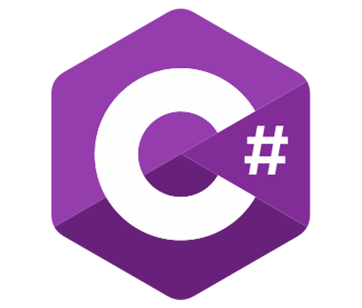

BaraMoto Refacciones
Tecnologías :
- 
-

Software administrativo de escritorio, creado para la empresa de venta de refacciones “BaraMoto”, permite de una forma más sencilla generar un correcto control de inventario, efectuar procesos de ventas y generar reportes de ventas totales por día.
Creado en lenguaje de programación C Sharp (C#), el cual facilita su instalación en sistemas operativos de Microsoft®, con una base de datos creada en MySQL®
Características
-
Inicio de sesión
-
Búsqueda de productos
-
Ventas
-
Nuevos registros
-
Modificación de registros
-
Registro de piezas
-
Reporte de ventas